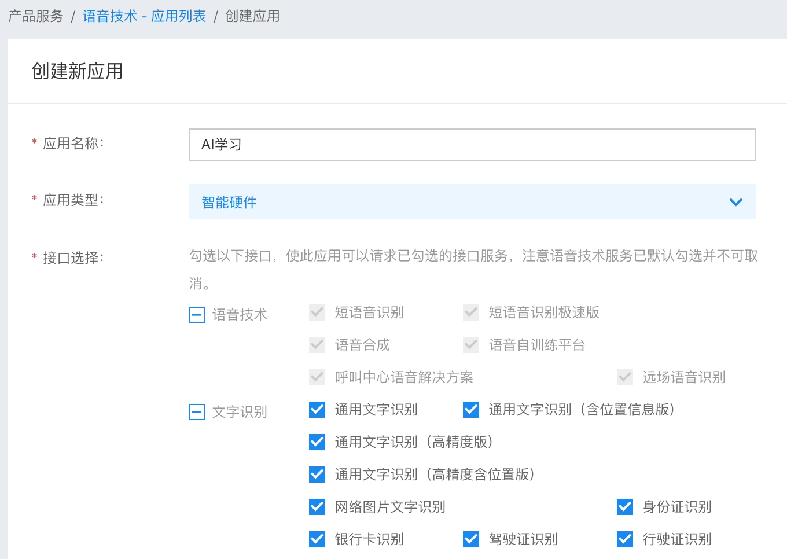
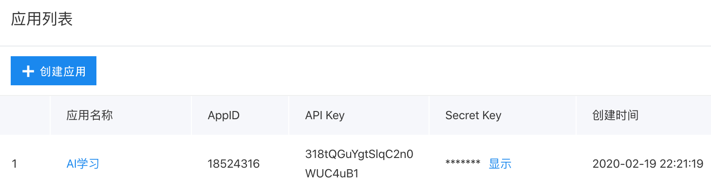

2. 百度AI系列课程¶
课程编写：谢作如
百度AI开放平台提供了各种应用，如语音识别、文字识别、智能对话、语音合成、人脸识别、图像识别等。通过百度AI，可以有效降低学习AI的门槛。
2.1. 课程简介¶
这是一个基于百度AI开放平台开发的课程。虚谷号已经安装了百度AI的Python库，可以很方便地调用。使用这一系列课程，请确保
2.2. 准备工作¶
1.安装必要的Python库。
如果你使用的是虚谷号，安装方法就可以略过。
https://github.com/gkvoelkl/ipython-turtle-widget
安装方法：
pip install ipyturtle jupyter nbextension enable –py –sys-prefix ipyturtle
2.注册百度用户。
注册网址：https://ai.baidu.com
注册用户后，还要建立应用（任何一个应用，然后把可以选择的接口全部选上），得到API Key 和 Secret Key。请记下两个Key，在下面的Python代码中都会用到。
 2.3. 课程目录¶
课程精选了百度AI平台中部分典型应用，提供最简洁有趣的代码。
1.人脸识别 2.颜值和表情 3.车辆识别 4.车牌识别 5.文字识别 6.智能语音
打开虚谷号的jupyter服务，即可看到这些课程。

2.4. 调用百度AI的一般过程¶
我们可以把百度AI看成是一个无所不知的“智者”，只要你准确地提交问题，即可得到答案。百度AI的调用过程，大致可以分为三个步骤：
1.建立对象，设置用户参数，读取需要识别的对象信息。
这里的对象信息，可以是一张图片、一段文字，也可以是音频文件等等。
2.提交信息到百度AI平台，平台处理后，返回识别结果。
3.根据识别结果，执行相应的代码。
百度AI返回的是JSON类型的字符串，通过程序进行分析、提取。Python中可以用一个函数将其转换为字典。
2.5. 课程示例¶
以“文字识别”为例。
第一步、导入库
# -*- coding: UTF-8 -*-
from aip import AipOcr
第二步、设置认证信息
注：这里用的是测试账号，有访问次数的限制，请使用自己的账号信息。
- ::
“”” 你的 APPID AK SK “”” APP_ID = ‘15469649’ API_KEY = ‘3vZgLINSnGGEafPflkTLzkGh’ SECRET_KEY = ‘8cUXtkMed2z86kqfyrV606ylnCmfcc48’
第三步、初始化AipFace对象
aipOcr = AipOcr(APP_ID, API_KEY, SECRET_KEY)
第四步、读取图片
filePath = "word.jpg"
def get_file_content(filePath):
with open(filePath, 'rb') as fp:
return fp.read()
第五步、定义参数变量
options = {'detect_direction': 'true','language_type': 'CHN_ENG',}
第六步、调用通用文字识别接口
result = aipOcr.basicGeneral(get_file_content(filePath), options)
print(result)
words_result=result['words_result']
for i in range(len(words_result)):
print(words_result[i]['words'])